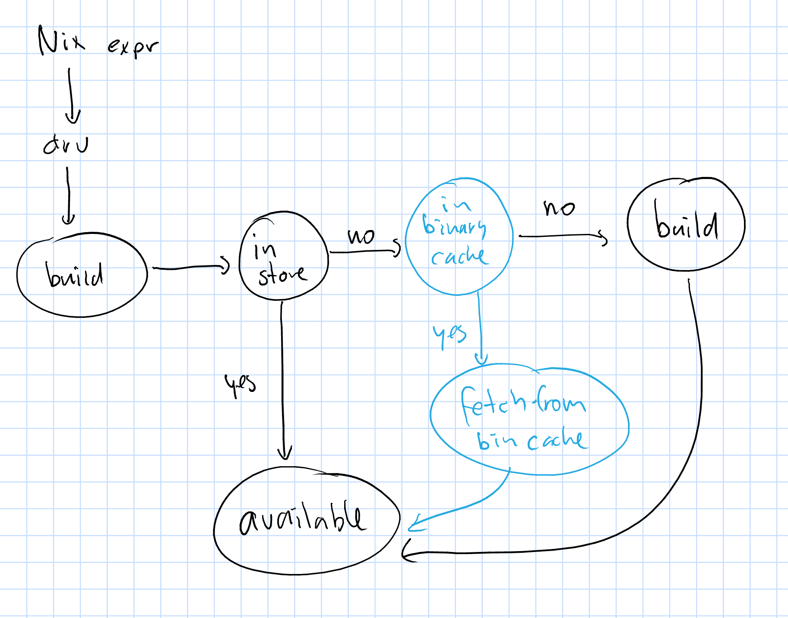

with (import <nixpkgs> {});
stdenv.mkDerivation rec {
name = "hello-2.10";
src = fetchurl {
url = "http://ftpmirror.gnu.org/gnu/hello/${name}.tar.gz";
sha256 = "0ssi1wpaf7plaswqqjwigppsg5fyh99vdlb9kzl7c9lng89ndq1i";
};
doCheck = true;
meta = {
description = "A program that produces a familiar, friendly greeting";
longDescription = ''
GNU Hello is a program that prints "Hello, world!" when you run it.
It is fully customizable.
'';
homepage = http://www.gnu.org/software/hello/manual/;
license = stdenv.lib.licenses.gpl3Plus;
maintainers = [ stdenv.lib.maintainers.eelco ];
platforms = stdenv.lib.platforms.all;
};
}
$ nix-build hello.nix
these paths will be fetched (0.04 MiB download, 0.19 MiB unpacked):
/nix/store/7984c712x8ksg6c26jdggg2zxf0ilymg-hello-2.10
fetching path ‘/nix/store/7984c712x8ksg6c26jdggg2zxf0ilymg-hello-2.10’...
*** Downloading ‘https://cache.nixos.org/nar/16j38pprm7lxrh2hg5hkd0zlh4bnq7mcs76p3qccz1n8s4b10wln.nar.xz’ (signed by ‘cache.nixos.org-1’) to ‘/nix/store/7984c712x8ksg6c26jdggg2zxf0ilymg-hello-2.10’...
% Total % Received % Xferd Average Speed Time Time Time Current
Dload Upload Total Spent Left Speed
100 40264 100 40264 0 0 283k 0 --:--:-- --:--:-- --:--:-- 284k
/nix/store/7984c712x8ksg6c26jdggg2zxf0ilymg-hello-2.10

hello2.nix:
with (import <nixpkgs> {});
stdenv.mkDerivation rec {
name = "hello-2.10";
extra_input = "yeah";
src = fetchurl {
url = "http://ftpmirror.gnu.org/gnu/hello/${name}.tar.gz";
sha256 = "0ssi1wpaf7plaswqqjwigppsg5fyh99vdlb9kzl7c9lng89ndq1i";
};
doCheck = true;
meta = {
description = "A program that produces a familiar, friendly greeting";
longDescription = ''
GNU Hello is a program that prints "Hello, world!" when you run it.
It is fully customizable.
'';
homepage = http://www.gnu.org/software/hello/manual/;
license = stdenv.lib.licenses.gpl3Plus;
maintainers = [ stdenv.lib.maintainers.eelco ];
platforms = stdenv.lib.platforms.all;
};
}
$ nix-build hello2.nix
these derivations will be built:
/nix/store/vdwcn4bf8aacdn0k61ay13np1i80q1jn-hello-2.10.drv
these paths will be fetched (0.69 MiB download, 0.69 MiB unpacked):
/nix/store/3x7dwzq014bblazs7kq20p9hyzz0qh8g-hello-2.10.tar.gz
fetching path ‘/nix/store/3x7dwzq014bblazs7kq20p9hyzz0qh8g-hello-2.10.tar.gz’...
*** Downloading ‘https://cache.nixos.org/nar/0yc68z03plkyms2vgr4f8byya75zcgqzbqsmbvazv8cf1fi70vdz.nar.xz’ (signed by ‘cache.nixos.org-1’) to ‘/nix/store/3x7dwzq014bblazs7kq20p9hyzz0qh8g-hello-2.10.tar.gz’...
% Total % Received % Xferd Average Speed Time Time Time Current
Dload Upload Total Spent Left Speed
100 709k 100 709k 0 0 409k 0 0:00:01 0:00:01 --:--:-- 409k
building path(s) ‘/nix/store/pfzsak6gccc88dx7x62fcyw684w9ixc0-hello-2.10’
unpacking sources
unpacking source archive /nix/store/3x7dwzq014bblazs7kq20p9hyzz0qh8g-hello-2.10.tar.gz
source root is hello-2.10
setting SOURCE_DATE_EPOCH to timestamp 1416139241 of file hello-2.10/ChangeLog
patching sources
configuring
configure flags: --disable-dependency-tracking --prefix=/nix/store/pfzsak6gccc88dx7x62fcyw684w9ixc0-hello-2.10
checking for a BSD-compatible install... /nix/store/lcwdbh37ha51z86c62mm65vbcfc990dd-coreutils-8.25/bin/install -c
checking whether build environment is sane... yes
checking for a thread-safe mkdir -p... /nix/store/lcwdbh37ha51z86c62mm65vbcfc990dd-coreutils-8.25/bin/mkdir -p
checking for gawk... gawk
checking for gcc... gcc
LOTS OF OUTPUT
LOTS OF OUTPUT
LOTS OF OUTPUT
/nix/store/lcwdbh37ha51z86c62mm65vbcfc990dd-coreutils-8.25/bin/install -c -m 644 hello.1 '/nix/store/pfzsak6gccc88dx7x62fcyw684w9ixc0-hello-2.10/share/man/man1'
make[3]: Leaving directory '/tmp/nix-build-hello-2.10.drv-0/hello-2.10'
make[2]: Leaving directory '/tmp/nix-build-hello-2.10.drv-0/hello-2.10'
make[1]: Leaving directory '/tmp/nix-build-hello-2.10.drv-0/hello-2.10'
post-installation fixup
shrinking RPATHs of ELF executables and libraries in /nix/store/pfzsak6gccc88dx7x62fcyw684w9ixc0-hello-2.10
shrinking /nix/store/pfzsak6gccc88dx7x62fcyw684w9ixc0-hello-2.10/bin/hello
gzipping man pages in /nix/store/pfzsak6gccc88dx7x62fcyw684w9ixc0-hello-2.10
stripping (with flags -S) in /nix/store/pfzsak6gccc88dx7x62fcyw684w9ixc0-hello-2.10/bin
patching script interpreter paths in /nix/store/pfzsak6gccc88dx7x62fcyw684w9ixc0-hello-2.10
/nix/store/pfzsak6gccc88dx7x62fcyw684w9ixc0-hello-2.10